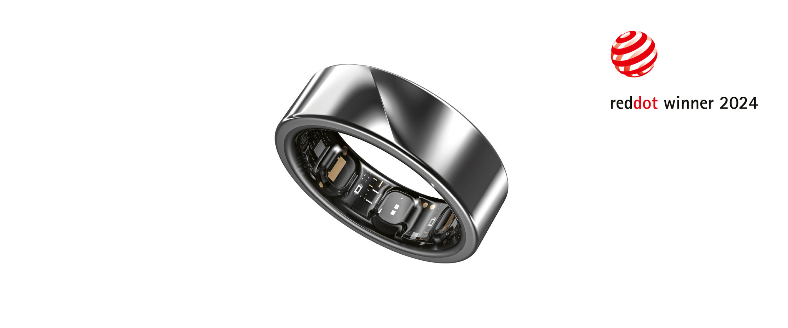
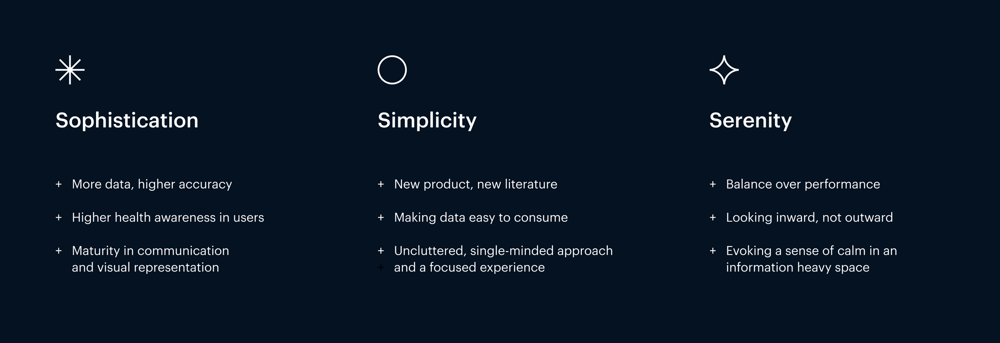
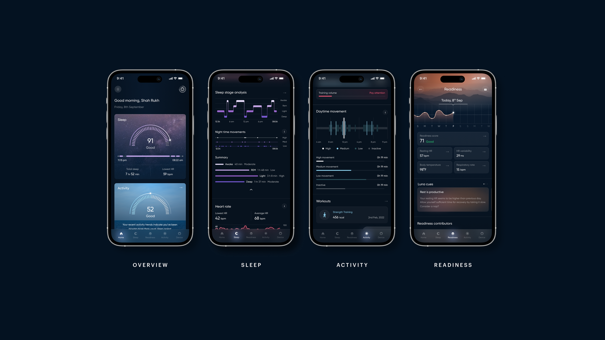
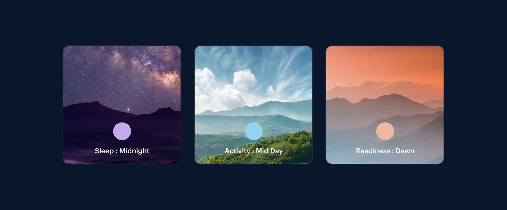
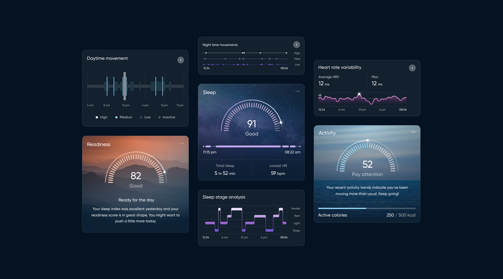
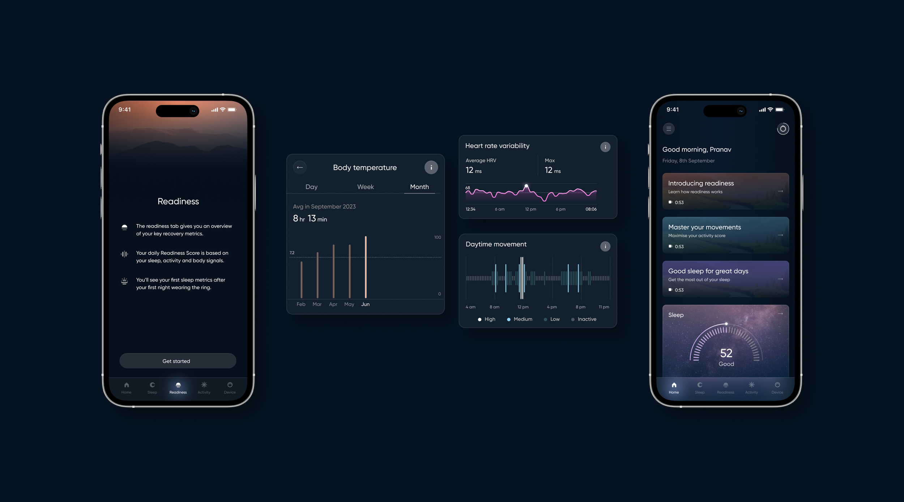
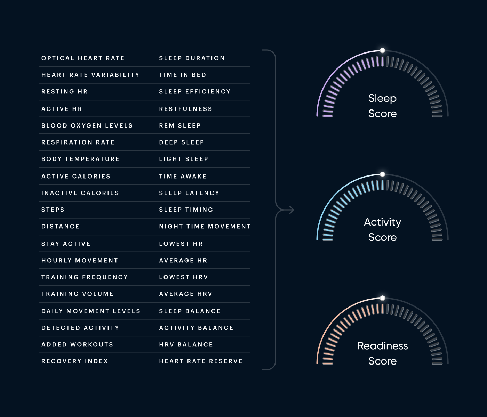
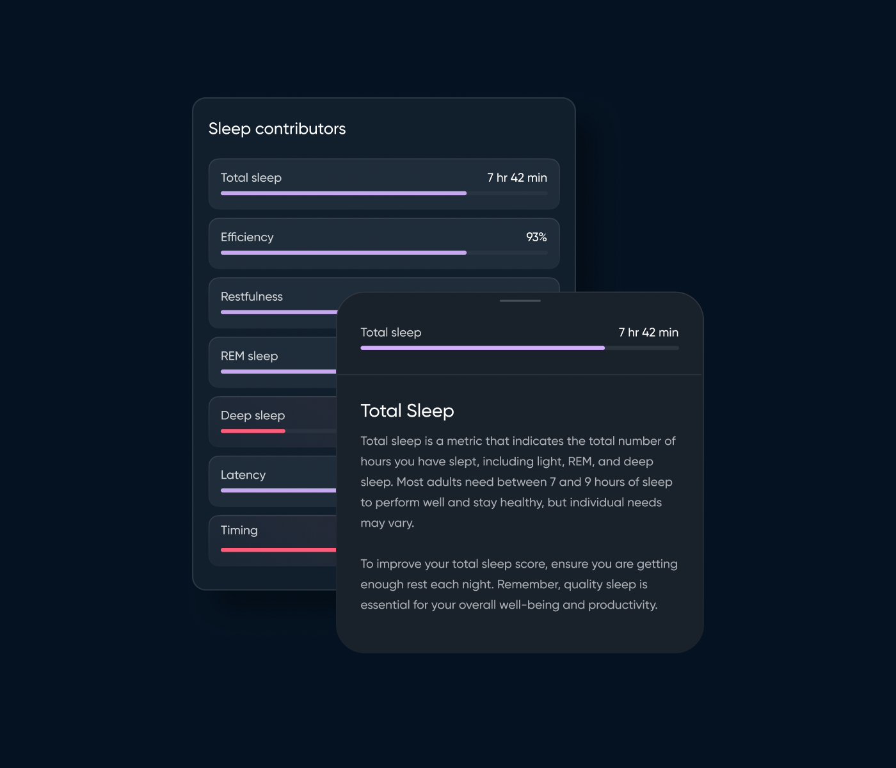

Luna Ring
While working with Noise, one of India’s leading wearable brands, I contributed to the development of Luna Ring, a health tracking device that merges style with functionality.
The project involved combining a sleek, modern design with advanced technology to provide users with meaningful insights into sleep, activity, and overall readiness. My focus was on crafting visual and interface designs that made health data intuitive and engaging.
A FRESH TAKE ON HEALTH TRACKING
Luna Ring isn’t just another health gadget; it’s a whole new category in health tech offering health monitoring that’s easy, stylish, and convenient.
At the heart of the experience is the app, which doesn’t just capture data from the ring but orchestrates the entire process. It transforms daily health insights into a personalized, user-friendly experience, unlocking a new opportunity for wellness that feels intuitive and accessible.

DESIGN PHILOSOPHY
My main goal was to translate the design principles into tangible UI components. Each aspect of the app, from the scorecards to icons, were designed to ensure a consistent user experience. By focusing on simplicity and clarity, I worked on key screens that balanced essential data with intuitive designs.

VISUAL DESIGN: THE DAWN OF SERENITY
I contributed on developing a unique visual language that communicated the concept of different times of day—sleep (midnight), activity (mid day), and readiness (dawn). This was achieved through scouting references and brainstorming which has directly influenced the entire aesthetic of the app and created a seamless user journey aligned with real-life routines.

MAKING HEALTH TRACKING SIMPLE AND INTUITIVE
I worked on designing an interface that simplifies health tracking, ensuring a clear and user-friendly experience. Key features include a personalized home screen, detailed insights, and tools for tracking workouts and sleep.


MAKING PROGRESS SIMPLE
I prioritized designing for clarity, focusing not just on presenting data but on guiding users with actionable steps and progress comparisons. This approach helps users make informed decisions without feeling overwhelmed.

CREATING A STRONG FIRST IMPRESSION
I contributed to the Luna Ring launch by designing key sections of the product landing page. My focus was on crafting an engaging first touchpoint that highlights the ring’s innovation, sleek design, and durability.

RESULTS AND REFLECTIONS
A big challenge with the Luna Ring was dealing with the overwhelming data modern tech tracks. Instead of flooding users with stats, we focused on actionable insights, keeping things simple and engaging. What initially seemed like a challenge turned out to be a standout feature.
This project also taught me how much design can shape a product’s perception. I learned the importance of making complex data easy to digest while still offering personalization and control for the user.
